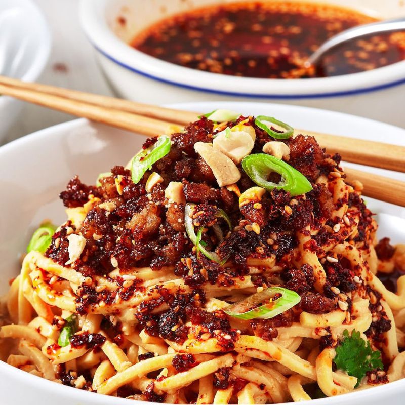

Home
Keema Noodles

Keema Noodles: A Nepali Culinary Fusion
Keema Noodles, a beloved dish in Nepal, blend South Asian spices with East
Asian noodle traditions, creating a hearty and flavorful meal. Originating
from regions like Boudha, a hub for Tibetan and Nepali cuisine, this dish
features spiced minced meat (often chicken, lamb, or beef) stir-fried with
vegetables and noodles.
The Nepali version is distinguished by its use of local spices like
Timur
(Szechuan pepper) and chili flakes, which add a unique numbing heat and
aroma. Influenced by Tibetan and Chinese culinary practices, it balances
savory umami from soy sauce with fresh crunch from vegetables like pak
choi and spring onions, making it a popular street food and comfort dish.
Ingredients
- Minced meat: (chicken, beef, or lamb)
-
Noodles: (traditionally Chinese-style egg noodles or
spaghetti)
-
Aromatics: Garlic, ginger, onions, and spring onions
-
Spices: Timur (Szechuan pepper), red chili powder,
chili flakes, cumin, and meat masala
-
Vegetables: Pak choi, cabbage, carrots, bell peppers
-
Sauces: Soy sauce, tomato puree, and mustard oil (for
authentic flavor)
Preparation Steps
-
Prepare the noodles: Cook the noodles according to
package instructions, then drain and set aside. If you’re using egg
noodles, rinse them in cold water to prevent sticking.
-
Cook the minced meat: In a large pan or wok, heat a
tablespoon of oil over medium-high heat. Add the minced meat (chicken,
beef, or lamb) and cook until browned, breaking it up into small pieces.
Season with a pinch of salt and pepper.
-
Prepare the aromatics: While the meat is cooking, chop
garlic, ginger, and onions finely. Once the meat is browned, add the
chopped garlic and ginger to the pan, stirring until fragrant (about 1
minute). Then, add the onions and cook until they become soft and
translucent.
-
Add the spices: Sprinkle in cumin, meat masala, red
chili powder, chili flakes, and Timur (Szechuan pepper). Stir to combine
and let the spices bloom for a couple of minutes, infusing the meat with
the flavors.
-
Add the vegetables: Add the sliced bell peppers,
cabbage, carrots, and pak choi to the pan. Stir-fry the vegetables for
2-3 minutes until they are tender-crisp and coated in the spiced meat
mixture.
-
Add the noodles: Once the vegetables are cooked, add
the cooked noodles to the pan. Toss the noodles with the meat and
vegetables, ensuring everything is evenly mixed.
-
Season with sauces: Drizzle soy sauce and tomato puree
over the noodles and toss again. If you want a more authentic flavor,
you can also add a little mustard oil. Continue to stir-fry everything
together for another 2-3 minutes until the noodles are well coated and
heated through.
-
Serve: Once everything is thoroughly mixed and the
noodles are hot, remove from heat. Serve the Keema Noodles hot,
garnished with freshly chopped spring onions and a sprinkle of chili
flakes if you like extra heat. Enjoy this flavorful fusion dish as a
hearty meal or snack!